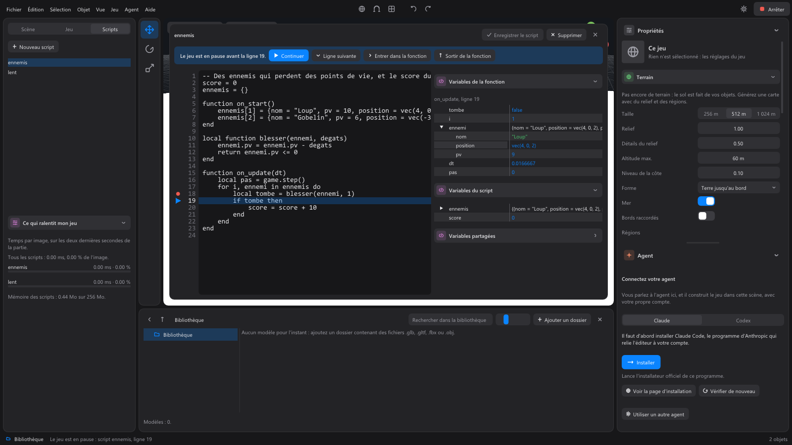
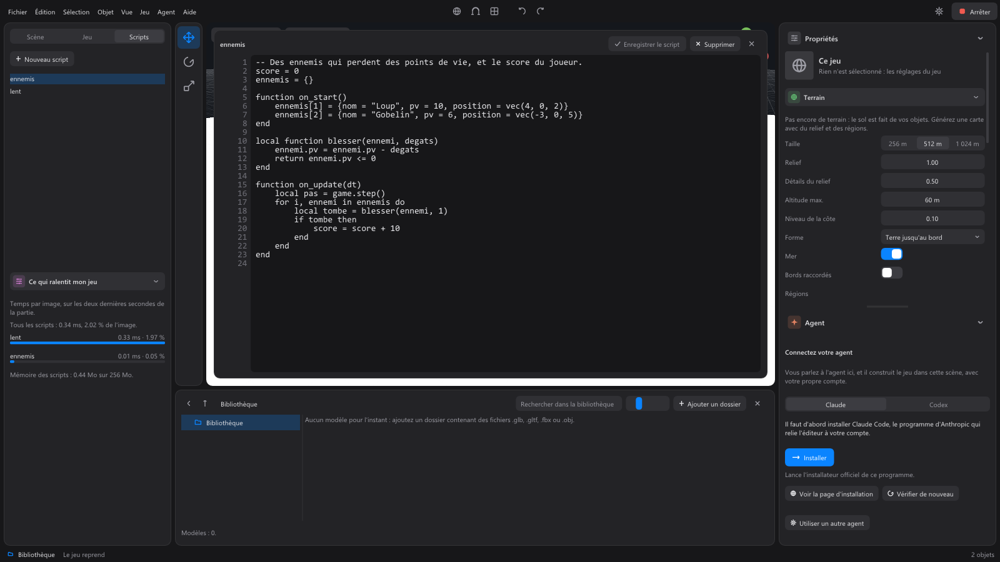

The Scripts tab¶
The third tab of the left column. "Scripts give the game its rules: enemies, pickups, objectives. The agent writes them for you, and you can change them here."
Scripts belong to the whole game, not to one scene: they keep running when the player goes from one scene to another.
The list¶
- New script creates an empty script, named
script_1,script_2..., which already holds the two basic functions:on_start()(when the game starts) andon_update(dt)(on every step of the game). - A click on a script opens it.
The script editor¶
The script opens over the 3D view, with its name at the top:
- type in the text area (the Tab key inserts a tab);
- Save script (or Ctrl+S in the text) checks the script's writing before saving it: an error shows in red under the text, and the script is not saved while it remains;
- Delete deletes the script;
- the Close cross closes the editor without saving.
As long as you have changed nothing, the editor follows what the agent writes in this script. An image named by a script is copied into the project when it is saved.
Each save and each deletion is undone with Ctrl+Z.
Pausing the game on a line¶
When a script doesn't do what you expect, you can stop the game on one of its lines and look at what it holds at that moment.

- Left of the text, the margin shows the line numbers. A click on a number sets a breakpoint (a red dot); a second click removes it. An empty line or a comment stops at the next line.
- Start the game with Play. When the game reaches the marked line, it pauses just before it: its window says so in its title, and the editor comes to the front, the script open on the highlighted line.
- Right of the text, the variables as they are at that moment: those of the stopped function, those of the calling functions, the script's variables (those written without
local) and the shared variables (shared). A table unfolds with a click on its arrow. - To resume:
- Continue (F5 key): the game runs until the next breakpoint, and its window comes back to the front;
- Next line (F10): runs the highlighted line and stops at the next one;
- Step into the function (F11): if the line calls a function of the script, stops at its first line;
- Step out of the function (Shift+F11): finishes the current function and stops in the one that called it.
You can set and remove breakpoints while the game runs. They are for trying the game from the editor: an exported game never stops. The game runs the script as it was saved when you clicked Play.
The agent can do the same without stopping the game: it reads a script's variables at a given line and moment during its test runs, to understand a problem without adding game.log everywhere.
What slows down my game¶
During a game, under the list of scripts, the What slows down my game section shows the time each script takes every frame, over the last two seconds: the heaviest at the top, in milliseconds and as a share of the frame. The game's systems are scripts: they show up too.

- A red bar flags a script that takes more than a quarter of the frame, or that is getting close to one of its limits (the time of a single step, or the scripts' memory): beyond it, the game stops it with an error.
- Hovering over a row: the worst moment, the average over the whole game, the script's memory and the share of its time budget it used at worst. A click opens the script.
- After the game, the figures from its end stay shown.
The agent receives the same figures with every test run, and can lighten the heaviest script itself.
The language¶
Scripts are written in Luau, a simple language derived from Lua. All the available functions (finding objects, moving them, making characters walk, showing text on screen, playing sounds, saving the game...) are in the scripts reference.
A script never changes a system: to change a system's behavior, it listens to its events (game.on) or replaces one of the points made for that (game.override). See the events.